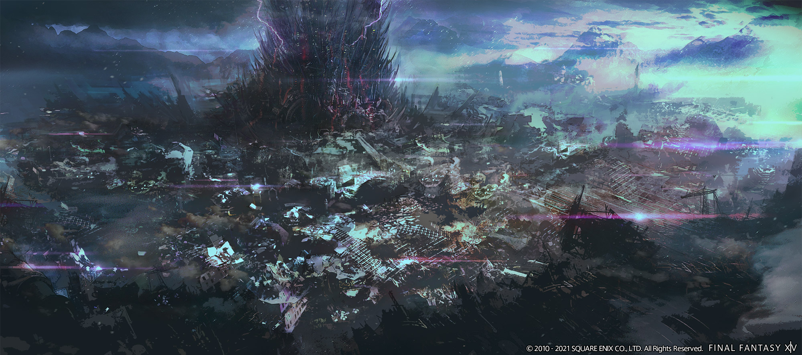
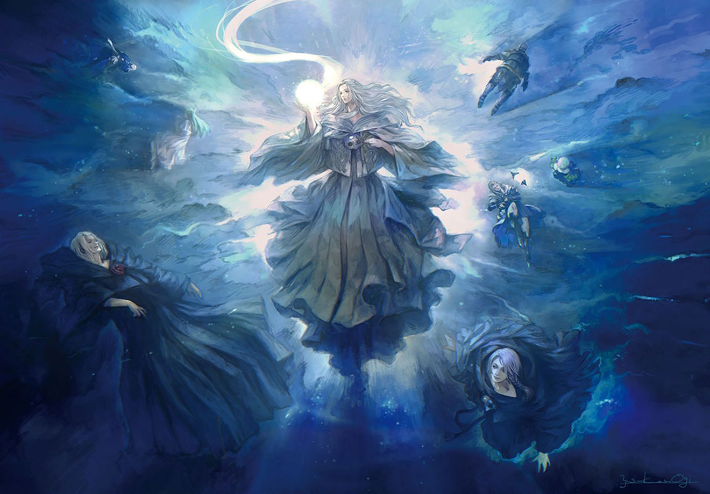
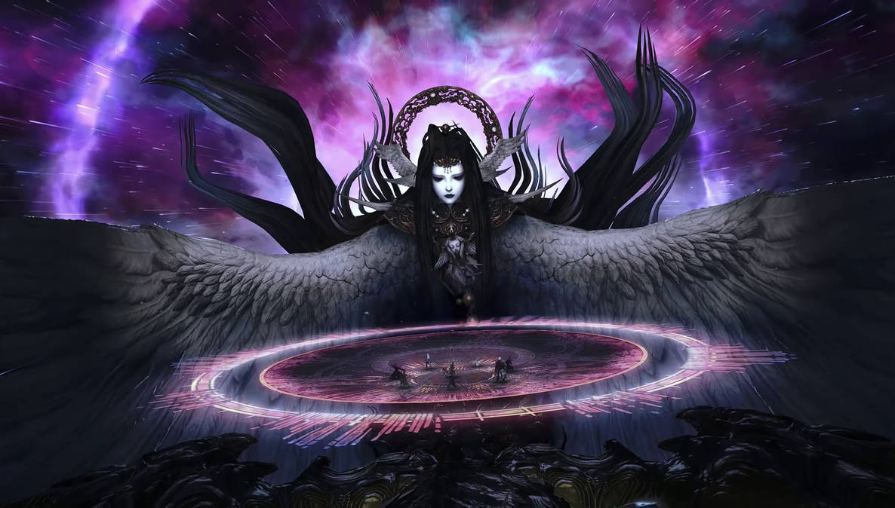

La fin d'une ère
La chute de Garlemald

le Guerrier de la Lumière et les héritiers de la Septième Aube sont confrontés à de nouveaux défis.
Des tours mystérieuses apparaissent dans le monde entier,
et une nouvelle menace émerge sous la forme des Telophoroi, menés par l'Ascian Fandaniel et Zenos
yae Galvus, visant à déclencher une apocalypse.
Les héritiers enquêtent sur les tours mystérieuses, découvrant qu'elles sont utilisées pour des
rituels de "Tempérance", transformant les gens en adeptes fanatiques. Ces tours drainent l'éther de
la planète et servent un but plus sinistre.
Garlemald, auparavant une superpuissance militaire et technologique, est en plein effondrement. Les
luttes internes, la corruption, et les perturbations causées par les Telophoroi ont considérablement
affaibli l'empire.
À son arrivée, le guerrier de la lumière découvre un empire en ruine. La capitale est ravagée par le
froid et les conflits, et la population souffre de la famine, de la maladie, et du désespoir.
Après un affrontement dans la cité détruite, Zenos et Fandaniel fuit vers la lune et sont suivis de
près par les héritiers.
L'apocalypse

Une fois sur la lune, Fandaniel libère Zodiark, nos héros finisse par le combattre et le vaincre, une fois ce dernier vaincu, on découvre qu'il oeuvrait pour limiter l'apocalypse, sans lui plus rien n'empeche celle-ci de se déclencher. les formes de vie de la planète de nos héros se transforment petit à petit en monstres assoifé de sang, les êtres transformés deviennent incontrôlables, les transformations semblent arbitraires, et personne n'est capable d'émèttre ne serait-ce qu'une hypothèse sur la cause des trasnformations. On apprend également que c'est l'apocalypse qui avait causé la mort du peuple Ascien.
Venat la déesse ascienne
Dans le but de trouver une solution pour endiguer l'apocalypse, notre héros va voyager dans le passé grâce à la tour de cristal. Il retrouve ainsi l'époque des Asciens qui était un peuple quasiment immortel et très puissant, dans leur monde de l'époque qui n'était autre que les reflets unifiés. Il découvre Hydaelyn, ou plutôt Venat avant qu'elle ne devienne cette dernière. En échangeant avec eux le héros apprend que Zodiark a été le premier primordial à être invoqué pour lutter contre l'apocalypse en échange de vie ascienne. Venat lassé de voir son peuple se laisser mourir décida de lancer une invocation pour devenir elle même un primordial divin : Hydaelyn, cependant elle n'a pas su endiguer l'apocalyse et décida elle même de fragmenter le monde tout en le protégeant, espérant qu'un jour les humains sauraient trouver la force de vaincre cette malédiction.
La chantre de l'anéantissement

Lors de son passage, notre héros découvrit les origines de l'apocalyse, Hermes, un ascien a crée
Meteïon, une androide. Elle avait pour mission d'étudier la vie et de trouver une réponse à la
question "qu'elle est le but de la vie".
Au cours de ses différents voyages, elle trouva une terrible réponse : toutes les formes de vie
qu'elle rencontre finissent invariablement par s'autodétruire ou être détruites. Ces découvertes
entraînent un profond désespoir et une perte d'espoir chez elle.
Elle finit par devenir la chantre de l'anéantissement et manipuler le Dyanmis une énergie soumise
aux émotions et qui dans certaines conditions peut changer l'état de tout être vivant.
De retour dans le présent, notre héros grâce à l'aide de Sharlayan voyage jusqu'au confin de
l'univers pour affronter Meteïon, finisse par la vaincre difficilement grâce à Zenos.
Une fois cela fait, Zenos qui s'était repenti veut un dernier combat contre le guerrier de la
lumière, cet affrontement à mort, finit par la défaite de ce dernier qui aura enfin eu,
l'affrontement ultime qu'il souhaitait.